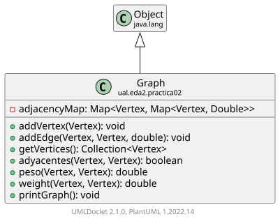

Class Graph
java.lang.Object
ual.eda2.practica02.Graph

-
Field Summary
Fields -
Constructor Summary
Constructors -
Method Summary
Modifier and TypeMethodDescriptionvoidMetodo que anade una arista entre dos verticesvoidMetodo que anade un vertice al grafobooleanadyacentes(Vertex v1, Vertex v2) Metodo que verifica si dos vertices son adyacentesMetodo que devuelve todos los vertices del grafodoubleMetodo que devuelve el peso entre dos verticesvoidMetodo para imprimir el grafo.doubleMetodo que devuelve el peso entre dos vertices
-
Field Details
-
adjacencyMap
-
-
Constructor Details
-
Graph
public Graph()Constructor por defecto
-
-
Method Details
-
addVertex
-
addEdge
-
getVertices
Metodo que devuelve todos los vertices del grafo- Returns:
- Collection
-
adyacentes
-
peso
-
weight
-
printGraph
public void printGraph()Metodo para imprimir el grafo.
-